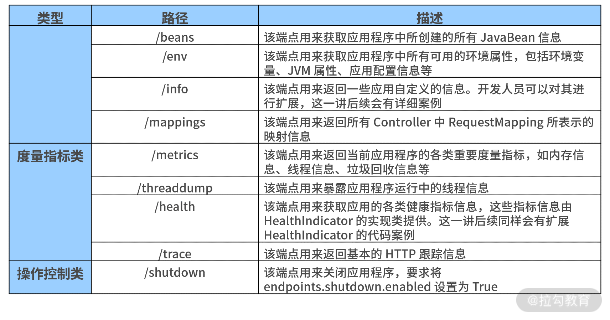
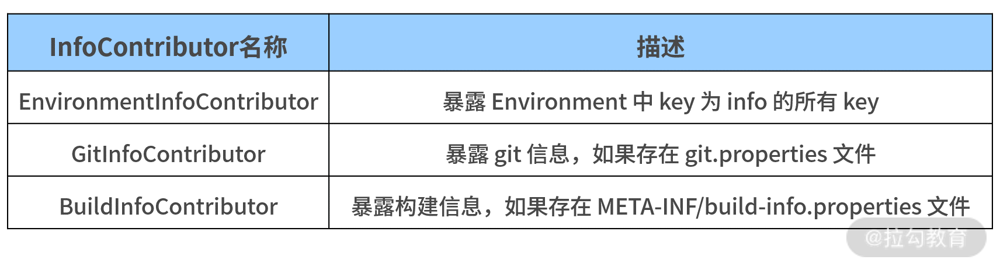

- 00 开篇词 从零开始：为什么要学习 Spring Boot？.md
- 01 家族生态：如何正确理解 Spring 家族的技术体系？.md
- 02 案例驱动：如何剖析一个 Spring Web 应用程序？.md
- 03 多维配置：如何使用 Spring Boot 中的配置体系？.md
- 04 定制配置：如何创建和管理自定义的配置信息？.md
- 05 自动配置：如何正确理解 Spring Boot 自动配置实现原理？.md
- 06 基础规范：如何理解 JDBC 关系型数据库访问规范？.md
- 07 数据访问：如何使用 JdbcTemplate 访问关系型数据库？.md
- 08 数据访问：如何剖析 JdbcTemplate 数据访问实现原理？.md
- 09 数据抽象：Spring Data 如何对数据访问过程进行统一抽象？.md
- 10 ORM 集成：如何使用 Spring Data JPA 访问关系型数据库？.md
- 11 服务发布：如何构建一个 RESTful 风格的 Web 服务？.md
- 12 服务调用：如何使用 RestTemplate 消费 RESTful 服务？.md
- 13 服务调用：如何正确理解 RestTemplate 远程调用实现原理？.md
- 14 消息驱动：如何使用 KafkaTemplate 集成 Kafka？.md
- 15 消息驱动：如何使用 JmsTemplate 集成 ActiveMQ？.md
- 16 消息驱动：如何使用 RabbitTemplate 集成 RabbitMQ？.md
- 17 安全架构：如何理解 Spring 安全体系的整体架构？.md
- 18 用户认证：如何基于 Spring Security 构建用户认证体系？.md
- 19 服务授权：如何基于 Spring Security 确保请求安全访问？.md
- 20 服务监控：如何使用 Actuator 组件实现系统监控？.md
- 21 指标定制：如何实现自定义度量指标和 Actuator 端点？.md
- 22 运行管理：如何使用 Admin Server 管理 Spring 应用程序？.md
- 23 数据测试：如何使用 Spring 测试数据访问层组件？.md
- 24 服务测试：如何使用 Spring 测试 Web 服务层组件？.md
- 结束语 以终为始：Spring Boot 总结和展望.md
20 服务监控：如何使用 Actuator 组件实现系统监控？
这一讲我们将介绍 Spring Boot 中一个非常有特色的主题——系统监控。
系统监控是 Spring Boot 中引入的一项全新功能，它对应用程序运行状态的管理非常有效。而 Spring Boot Actuator 组件主要通过一系列 HTTP 端点提供的系统监控功能来实现系统监控。因此，接下来我们将引入 Spring Boot Actuator 组件，介绍如何使用它进行系统监控，以及如何对 Actuator 端点进行扩展。
引入 Spring Boot Actuator 组件
在初始化 Spring Boot 系统监控功能之前，首先我们需要引入 Spring Boot Actuator 组件，具体操作为在 pom 中添加如下所示的 Maven 依赖：
<dependency>
<groupId>org.springframework.boot</groupId>
<artifactId>spring-boot-starter-actuator</artifactId>
</dependency>
请注意，引入 Spring Boot Actuator 组件后，并不是所有的端点都对外暴露。例如，启动 customer-service 时，我们就可以在启动日志中发现如下所示内容：
Exposing 2 endpoint(s) beneath base path '/actuator'
访问 http://localhost:8080/actuator 端点后，我们也会得到如下所示结果。
{
"_links":{
"self":{
"href":"http://localhost:8080/actuator",
"templated":false
},
"health-path":{
"href":"http://localhost:8080/actuator/health/{*path}",
"templated":true
},
"health":{
"href":"http://localhost:8080/actuator/health",
"templated":false
},
"info":{
"href":"http://localhost:8080/actuator/info",
"templated":false
}
}
}
这种结果就是 HATEOAS 风格的 HTTP 响应。如果我们想看到默认情况下看不到的所有端点，则需要在配置文件中添加如下所示的配置信息。
management:
endpoints:
web:
exposure:
include: "*"
重启应用后，我们就能获取到 Spring Boot Actuator 暴露的所有端点，如下代码所示：
{
"_links":{
"self":{
"href":"http://localhost:8080/actuator",
"templated":false
},
"beans":{
"href":"http://localhost:8080/actuator/beans",
"templated":false
},
"health":{
"href":"http://localhost:8080/actuator/health",
"templated":false
},
"health-path":{
"href":"http://localhost:8080/actuator/health/{*path}",
"templated":true
},
"info":{
"href":"http://localhost:8080/actuator/info",
"templated":false
},
"conditions":{
"href":"http://localhost:8080/actuator/conditions",
"templated":false
},
"configprops":{
"href":"http://localhost:8080/actuator/configprops",
"templated":false
},
"env":{
"href":"http://localhost:8080/actuator/env",
"templated":false
},
"env-toMatch":{
"href":"http://localhost:8080/actuator/env/{toMatch}",
"templated":true
},
"loggers":{
"href":"http://localhost:8080/actuator/loggers",
"templated":false
},
"loggers-name":{
"href":"http://localhost:8080/actuator/loggers/{name}",
"templated":true
},
"heapdump":{
"href":"http://localhost:8080/actuator/heapdump",
"templated":false
},
"threaddump":{
"href":"http://localhost:8080/actuator/threaddump",
"templated":false
},
"metrics-requiredMetricName":{
"href":"http://localhost:8080/actuator/metrics/{requiredMetricName}",
"templated":true
},
"metrics":{
"href":"http://localhost:8080/actuator/metrics",
"templated":false
},
"scheduledtasks":{
"href":"http://localhost:8080/actuator/scheduledtasks",
"templated":false
},
"mappings":{
"href":"http://localhost:8080/actuator/mappings",
"templated":false
}
}
}
根据端点所起到的作用，我们把 Spring Boot Actuator 提供的原生端点分为如下三类。
- 应用配置类： 主要用来获取应用程序中加载的应用配置、环境变量、自动化配置报告等配置类信息，它们与 Spring Boot 应用密切相关。
- 度量指标类： 主要用来获取应用程序运行过程中用于监控的度量指标，比如内存信息、线程池信息、HTTP 请求统计等。
- 操作控制类： 在原生端点中只提供了一个关闭应用的端点，即 /shutdown 端点。
根据 Spring Boot Actuator 默认提供的端点列表，我们将部分常见端点的类型、路径和描述梳理在如下表格中，仅供参考。

通过访问上表中的各个端点，我们就可以获取自己感兴趣的监控信息了。例如访问了http://localhost:8082/actuator/health端点，我们就可以得到如下所示的 account-service 基本状态。
{
"status":"UP"
}
此时，我们看到这个健康状态信息非常简单。
那有没有什么办法可以获取更详细的状态信息呢？答案是：有，而且办法很简单，我们只需要在配置文件中添加如下所示的配置项即可。
management:
endpoint:
health:
show-details: always
上述配置项指定了针对 health 端点需要显示它的详细信息。这时，如果我们重启 Spring Boot 应用程序，并重新访问 http://localhost:8082/actuator/health 端点，就可以获取如下所示的详细信息。
{
"status":"UP",
"components":{
"diskSpace":{
"status":"UP",
"details":{
"total":201649549312,
"free":3434250240,
"threshold":10485760
}
},
"ping":{
"status":"UP"
}
}
}
如果 Spring Boot Actuator 默认提供的端点信息不能满足业务需求，我们可以对其进行修改和扩展。此时，常见实现方案有两种，一种是扩展现有的监控端点，另一种是自定义新的监控端点。这两种方案我们都会逐一介绍，不过这一讲先来关注如何在现有的监控端点上添加定制化功能。
扩展 Actuator 端点
前面我们介绍了 Spring Boot 默认暴露了日常开发中最常见的两个端点：Info 端点和 Health 端点。接下来，我们讨论下如何对这两个端点进行扩展。
扩展 Info 端点
Info 端点用于暴露 Spring Boot 应用的自身信息。在 Spring Boot 内部，它把这部分工作委托给了一系列 InfoContributor 对象，而 Info 端点会暴露所有 InfoContributor 对象所收集的各种信息。
在Spring Boot 中包含了很多自动配置的 InfoContributor 对象，常见的 InfoContributor 及其描述如下表所示：

以上表中的 EnvironmentInfoContributor 为例，通过在配置文件中添加格式以“info”作为前缀的配置段，我们就可以定义 Info 端点暴露的数据。添加完成后，我们将看到所有在“info”配置段下的属性都将被自动暴露。
比如你可以将如下所示配置信息添加到配置文件 application.yml 中：
info:
app:
encoding: UTF-8
java:
source: 1.8.0_31
target: 1.8.0_31
现在访问 Info 端点，我们就能得到如下的 Environment 信息。
{
"app":{
"encoding":"UTF-8",
"java":{
"source":"1.8.0_31",
"target":"1.8.0_31"
}
}
}
同时，我们还可以在服务构建时扩展 Info 属性，而不是硬编码这些值。假设使用 Maven，我们就可以按照如下所示的配置重写前面的示例并得到同样的效果。
info:
app:
encoding: @project.build.sourceEncoding@
java:
source: @java.version@
target: @java.version@
很多时候，Spring Boot 自身提供的 Info 端点并不能满足我们的业务需求，这就需要我们编写一个自定义的 InfoContributor 对象。
方法也很简单，我们直接实现 InfoContributor 接口的 contribute() 方法即可。例如，我们希望在 Info 端点中暴露该应用的构建时间，就可以采用如下所示的代码进行操作。
@Component
public class CustomBuildInfoContributor implements InfoContributor {
@Override
public void contribute(Builder builder) {
builder.withDetail("build",
Collections.singletonMap("timestamp", new Date()));
}
}
重新构建应用并访问 Info 端口后，我们就能获取如下所示信息。
{
"app":{
"encoding":"UTF-8",
"java":{
"source":"1.8.0_31",
"target":"1.8.0_31"
}
},
"build":{
"timestamp":1604307503710
}
}
这里我们可以看到，CustomBuildInfoContributor 为 Info 端口新增了时间属性。
扩展 Health 端点
Health 端点用于检查正在运行的应用程序健康状态，而健康状态信息由 HealthIndicator 对象从 Spring 的 ApplicationContext 中获取。
和 Info 端点一样，Spring Boot 内部也提供了一系列 HealthIndicator 对象供我们实现定制化。在默认情况下，HealthAggregator 会根据 HealthIndicator 的有序列表对每个状态进行排序，从而得到最终的系统状态。
常见的 HealthIndicator 如下表所示：
| HealthIndicator 名称 | 描述 |
|---|---|
| DiskSpaceHealthIndicator | 检查磁盘空间是否足够 |
| DataSourceHealthIndicator | 检查是否可以获得连接 DataSource |
| ElasticsearchHealthIndicator | 检查 Elasticsearch 集群是否启动 |
| JmsHealthIndicator | 检查 JMS 代理是否启动 |
| MailHealthIndicator | 检查邮件服务器是否启动 |
| MongoHealthIndicator | 检查 Mongo 数据库是否启动 |
| RabbitHealthIndicator | 检查 RabbitMQ 服务器是否启动 |
| RedisHealthIndicator | 检查 Redis 服务器是否启动 |
| SolrHealthIndicator | 检查 Solr 服务器是否已启动 |
Health 端点信息的丰富程度取决于当下应用程序所处的环境，而一个真实的 Health 端点信息如下代码所示：
{
"status":"UP",
"components":{
"db":{
"status":"UP",
"details":{
"database":"MySQL",
"result":1,
"validationQuery":"/* ping */ SELECT 1"
}
},
"diskSpace":{
"status":"UP",
"details":{
"total":201649549312,
"free":3491287040,
"threshold":10485760
}
},
"ping":{
"status":"UP"
}
}
}
通过以上这些信息，我们就可以判断该环境中是否包含了 MySQL 数据库。
现在，我们还想在 Health 端点中暴露 customer-service 当前运行时状态。
为了进一步明确该服务的状态，我们可以自定义一个 CustomerServiceHealthIndicator 端点专门展示 customer-service 的状态信息，CustomerServiceHealthIndicator 的定义如下所示：
@Component
public class CustomerServiceHealthIndicator implements
HealthIndicator {
@Override
public Health health() {
try {
URL url = new
URL("http://localhost:8083/health/");
HttpURLConnection conn = (HttpURLConnection)
url.openConnection();
int statusCode = conn.getResponseCode();
if (statusCode >= 200 && statusCode < 300) {
return Health.up().build();
} else {
return Health.down().withDetail("HTTP Status Code", statusCode).build();
}
} catch (IOException e) {
return Health.down(e).build();
}
}
}
我们需要提供 health() 方法的具体实现并返回一个 Health 结果。该 Health 结果应该包括一个状态，并且可以根据需要添加任何细节信息。
以上代码中，我们使用了一种简单且直接的方式判断配置中心服务“customerservice”是否正在运行。然后我们构建一个 HTTP 请求，并根据 HTTP 响应得出了健康诊断的结论。
如果 HTTP 响应的状态码处于 200~300 之间，我们认为该服务正在运行，此时，Health.up().build() 方法就会返回一种 Up 响应，如下代码所示：
{
"status": "UP",
"details": {
"customerservice":{
"status": "UP"
}
…
}
}
如果状态码不处于这个区间（例如返回 404，代表服务不可用），Health.down().withDetail().build() 方法就会返回一个 Down 响应，并给出具体的状态码，如下代码所示：
{
"status": "DOWN",
"details": {
"customerservice":{
"status": "DOWN",
"details": {
"HTTP Status Code": "404"
}
},
…
}
}
如果 HTTP 请求直接抛出了异常，Health.down().build() 方法同样会返回一个 Down 响应，并返回异常信息，效果如下代码所示：
{
"status": "DOWN",
"details": {
"customerservice":{
"status": "DOWN",
"details": {
"error": "java.net.ConnectException: Connection refused: connect"
}
},
…
}
}
显然，通过扩展 Health 端点为我们实时监控系统中各个服务的正常运行状态提供了很好的支持，我们也可以根据需要构建一系列有用的 HealthIndicator 实现类，并添加报警等监控手段。
小结与预告
Spring Boot 内置的 Actuator 组件使得开发人员在管理应用程序运行的状态有了更加直接且高效的手段。
这一讲，我们引入了 Actuator 组件并介绍了该组件提供的一系列核心端点，同时重点分析了 Info 和 Health 这两个基础端点，并给出了对它们进行扩展的系统方法。
系统监控的一大目标是收集和分析系统运行时的度量指标，并基于这些指标判断当前的运行时状态，因此，21 讲我们将讨论如何在系统中嵌入自定义度量指标的实现技巧。
© 2019 - 2023 Liangliang Lee. Powered by gin and hexo-theme-book.